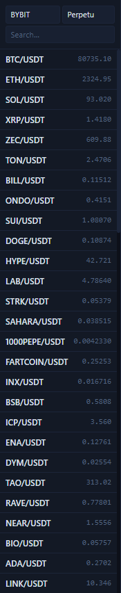

Markets and Symbols Sidebar¶
The left sidebar decides which market and which symbol you are actually looking at. Many “why can't I read positions?” or “why is the order result wrong?” issues start here.

What this area contains¶
- Exchange selection, such as
OKX,BINANCE, andBYBIT. - Market type selection:
SwaporSpot. - A search box for filtering symbols quickly.
- A symbol list with the latest price for each symbol.
Correct order of use¶
- Select the exchange first.
- Then choose
SpotorSwap. - Then search for and click the symbol.
- Only after that should you operate from the right-side order panel.
Which areas this affects¶
- The center chart switches to the current symbol.
- The right order panel inherits the current symbol and market type.
- The meaning of verification in the bottom positions, orders, and history tabs also changes with it.
The most common mistakes¶
- Reversing
SpotandSwap. - Switching exchanges but forgetting to confirm the symbol again.
- Searching a symbol and clicking the wrong one when several similar tickers appear.
Always look back here before placing an order
Even if the side, leverage, and TP / SL in the right panel are all correct, the final result can be completely different from what you intended if the market type in the left sidebar is wrong.
Next, continue with Chart and Timeframe Tools or Right Order Panel.